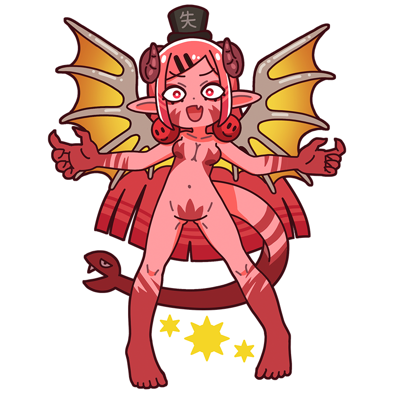

Bow down!
Make way for Lady Blake,
devourer of the earth and burner of stars!
Blake
The demon lord foretold in Revelation
There is no tomorrow for you!
A muse of Romanticism and a demon lord who descended to destroy all order, burning every living thing on Earth to ashes. She may seem to revel in destruction, but her true power lies in the creation that follows. Her secret hobby is stripping down to nothing but a hat.
Style
Hometown
England
Classics
- "The Great Red Dragon and the Woman Clothed with the Sun"
- "Newton"
- "Jerusalem" etc.
This is the Blake piece!
The Great Red Dragon and the Woman Clothed with the Sun
A scene from the Book of Revelation in the New Testament. The red dragon represents Satan, while the woman is the Virgin Mary, about to give birth. This muscular embodiment of violence, with seven heads, waits to devour her child. But the newborn will be the savior of the world. The outcome was decided from the start.
Year
Around 1803-1805
Medium
Watercolor on paper
Dimension
43.7 cm x 34.8 cm
Collection
Brooklyn Museum
（USA)
Who is Blake?
William Blake
An English painter and poet active in the 18th and 19th centuries. Often described as a forerunner of Romanticism, he refused to fit into established movements and pursued a world of his own. From childhood, he experienced strange visions of angels and other figures, and his work is rich in philosophical and mystical imagery. His unconventional style was poorly understood in his time, but today he is recognized as a major figure in British art for his original fusion of poetry and painting.
Full Name
William Blake
Born
November 28, 1757
Died
August 12, 1827(aged 69)